Empire Stone × Empire Granite — QA
Golden Path — Block (ชุดที่ 1 จาก 3)
เรื่องราวของ Block ตั้งแต่ตั้งค่าหินชนิดใหม่ → สั่งซื้อเป็นตัน → รับของกรอกขนาดรายก้อน → ดู/แก้ขนาด → ขายทั้งก้อน → ส่งของ → ออกใบแจ้งหนี้ — สร้างใหม่หลังปรับแนวคิด Slab = Lot (ADR-087) ชุดถัดไปคือ Slab แล้ว FG · รันจริงบน eg-tst 5 ต.ค. 2026
12Test Case ทั้งหมด
5หมวด
9High Priority
3Medium Priority
0Low Priority
B1. ตั้งค่าหินชนิดใหม่ (Setup)
สร้างหิน 1 ชนิดพร้อมสินค้า Block และตั้งราคาขายต่อลูกบาศก์เมตร · 2 test cases
| TC ID | Scenario | Precondition | Steps | ข้อมูลตัวอย่าง | Expected Result | Priority | ภาพหน้าจอ |
|---|---|---|---|---|---|---|---|
| TC-GP-BLK-01 | สร้างหินชนิดใหม่ด้วย Quick Material Setup พร้อมสินค้า Block | เข้าระบบเป็น Empire Granite ได้แล้ว |
|
ชื่อ = GP Block Marble Category = Marble Density = 2.7 ตัน/ลบ.ม. Slab Sales Price = 4,500 · Slab Cost = 3,000 ติ๊ก Block Product |
ระบบเปิดหน้า Material ใหม่ พร้อมตาราง LINKED PRODUCTS ที่มีแถว Slab (By Unique Serial Number) และแถว Block (By Lots) — Block ถูกคุมสต็อกเป็น Lot | High | 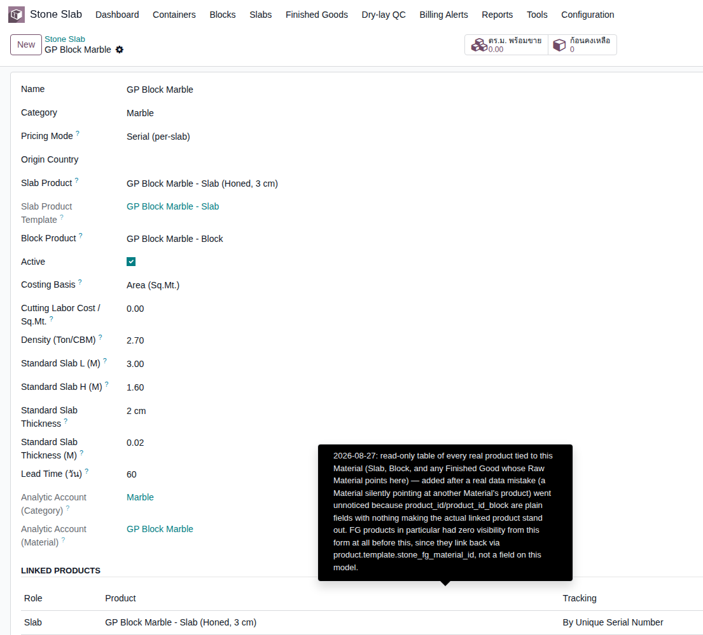 |
| TC-GP-BLK-02 | ตั้งราคาขายของสินค้า Block ต่อลูกบาศก์เมตร (ก่อนรับของ) ⚠️ ต้องทำก่อนรับของ: หินที่ติ๊ก "ขายทั้งก้อนได้" ต้องมีราคาขายต่อลบ.ม. ถ้าลืม ระบบจะไม่ยอมให้ Validate ใบรับของ และแจ้งว่า "กรุณากรอกราคาขาย/คิว ก่อนบันทึก Block" (พบจริงในรอบทดสอบนี้ — Quick Setup ยังไม่ถามราคานี้ให้) |
ทำ TC-GP-BLK-01 เสร็จแล้ว |
|
Sales Price = 45,000 บาท ต่อ m³ | บันทึกราคา 45,000.00 ต่อ m³ ได้ — ราคานี้จะถูกใส่เป็น "Sales Price / CBM" ให้ทุก Block ที่รับเข้ามาใหม่อัตโนมัติ | High | 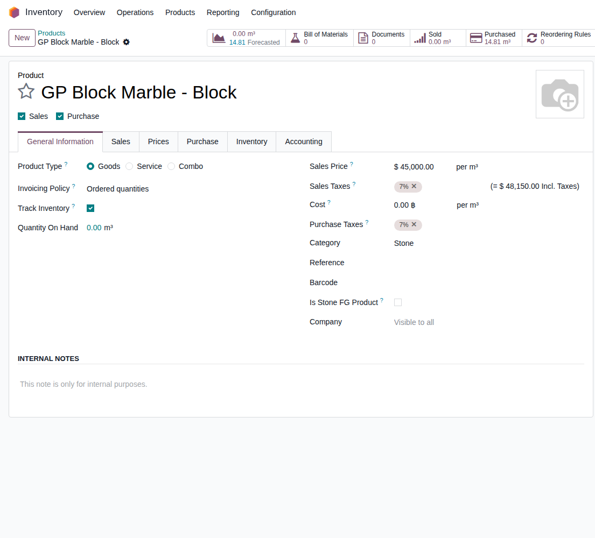 |
B2. สั่งซื้อ Block (Purchase)
ซื้อเป็นตัน — ระบบแปลงเป็นลูกบาศก์เมตรให้เอง · 1 test case
| TC ID | Scenario | Precondition | Steps | ข้อมูลตัวอย่าง | Expected Result | Priority | ภาพหน้าจอ |
|---|---|---|---|---|---|---|---|
| TC-GP-BLK-03 | สร้างใบสั่งซื้อ (PO) Block เป็นตัน แล้ว Confirm ช่อง "จำนวน" บน PO คือปริมาณโดยประมาณที่สั่ง ไม่ใช่จำนวนก้อน — ขนาดจริงของแต่ละก้อนจะกรอกตอนรับของ ปริมาตรที่ระบบคำนวณปัดทศนิยม 2 ตำแหน่ง (40 ตัน แสดงเป็น 39.99 ตัน = 14.81 ลบ.ม.) |
ทำ TC-GP-BLK-02 เสร็จแล้ว · มีผู้ขายในระบบ |
|
Vendor = Demo Stone Supplier Qty (Ton) = 40 Price / Ton = 6,000 |
PO ขึ้นสถานะ Purchase Order — Quantity 14.81 m³, ราคา 16,200 ต่อ m³ (=6,000×2.7), ยอดก่อน VAT 239,922.00 บาท มีปุ่ม Receive และสมาร์ทปุ่ม Receipt 1 ใบ (ตัวอย่างจริง P00054) | High | 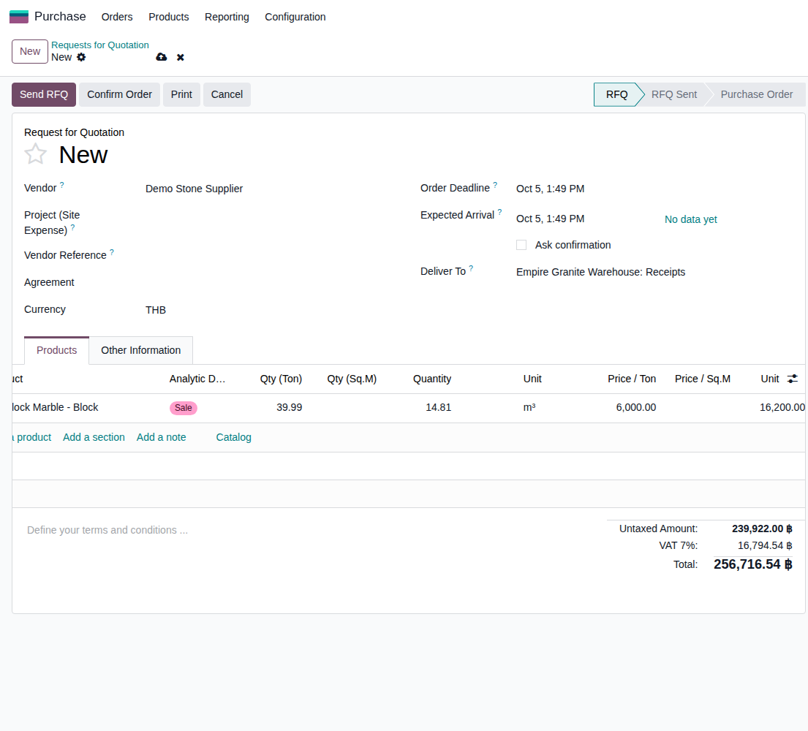 |
B3. รับ Block เข้าคลัง (Receipt)
หัวใจของชุดนี้ — 1 แถว = 1 ก้อนจริง กรอกขนาดที่วัดได้จริง · 4 test cases
| TC ID | Scenario | Precondition | Steps | ข้อมูลตัวอย่าง | Expected Result | Priority | ภาพหน้าจอ |
|---|---|---|---|---|---|---|---|
| TC-GP-BLK-04 | เปิดใบรับของ แล้วกรอกขนาดจริงของ Block 2 ก้อน | ทำ TC-GP-BLK-03 เสร็จแล้ว |
|
ก้อน 1: ยาว 3.0 × กว้าง 1.6 × สูง 1.3 ม. ก้อน 2: ยาว 2.8 × กว้าง 1.5 × สูง 1.2 ม. |
ระบบคำนวณปริมาตรและน้ำหนักให้ทุกแถว: ก้อน 1 = 6.24 m³ / 16.85 ตัน, ก้อน 2 = 5.04 m³ / 13.61 ตัน, รวม 11.28 m³ — กลับมาที่ใบรับของแถว Block แสดง Quantity 11.28 จากความต้องการ 14.81 | High | 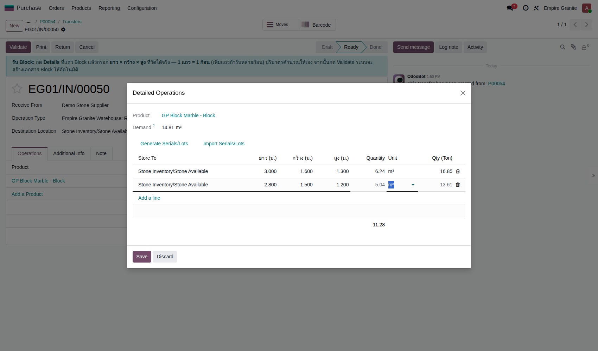 |
| TC-GP-BLK-05 | กด Validate รับของ (รับยังไม่ครบ → สร้าง Backorder) รับ 11.28 จากที่สั่ง 14.81 — Odoo ถามว่าจะรับส่วนที่เหลือทีหลังไหม เลือก "Create Backorder" เพื่อให้เหลือใบรับสำหรับก้อนที่ยังไม่มาถึง |
ทำ TC-GP-BLK-04 เสร็จแล้ว |
|
- | ใบรับของขึ้น Done · ระบบแจ้งเตือนสีเขียวว่า "สร้าง Block สำเร็จ BLK-26-0006 รับสต็อกเข้าคลังแล้ว 6.240 m3" และ BLK-26-0007 (5.040 m3) · ระบบสร้างใบรับใหม่ (Backorder) สำหรับส่วนที่เหลือให้อัตโนมัติ | High | 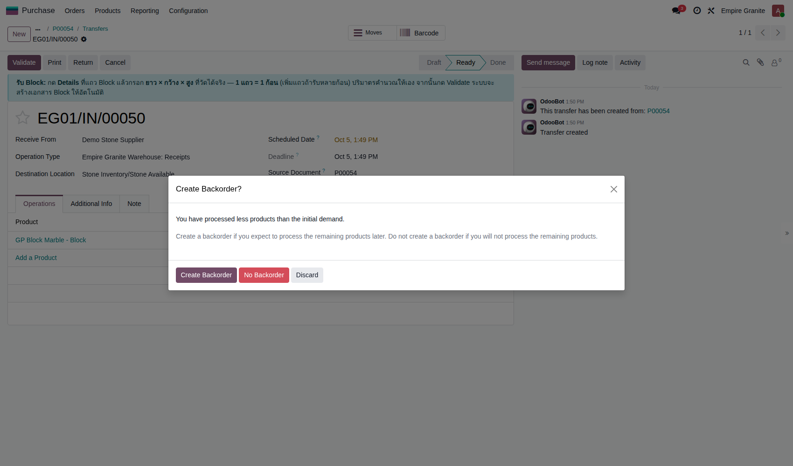 |
| TC-GP-BLK-06 | ตรวจว่าได้ Block 2 ก้อนในระบบ และ PO ขึ้นยอดรับแล้ว | ทำ TC-GP-BLK-05 เสร็จแล้ว |
|
- | มี Block ใหม่ 2 ใบ: BLK-26-0006 (เหลือ 6.24 CBM / 16.85 ตัน) และ BLK-26-0007 (เหลือ 5.04 CBM / 13.61 ตัน) ชื่อหินและผู้ขายถูกต้อง · PO แสดง Received = 11.28 จาก 14.81 | High | 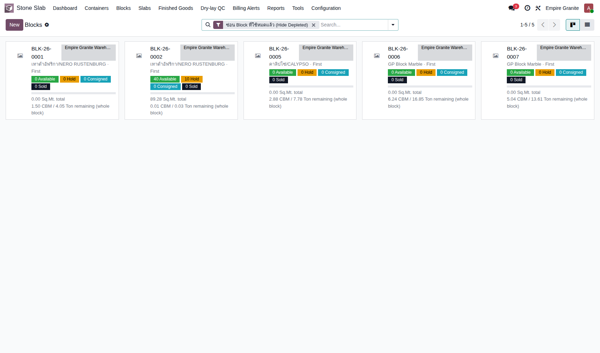 |
| TC-GP-BLK-07 | รับ Block ก้อนที่ 3 จากใบ Backorder จนครบ | ทำ TC-GP-BLK-05 เสร็จแล้ว (มีใบ Backorder) |
|
ก้อน 3: ยาว 2.0 × กว้าง 1.47 × สูง 1.2 ม. | ได้ BLK-26-0008 (3.528 m³ / 9.53 ตัน) ใบรับขึ้น Done และไม่ถามเรื่อง Backorder อีก · PO แสดง Received = 14.81 ครบ (ตัวอย่างจริง: Backorder EG01/IN/00052) | Medium | 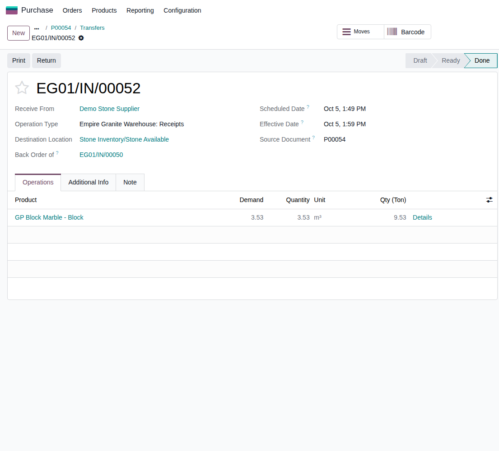 |
B4. ดูและจัดการ Block
ดูข้อมูลของ Block และแก้ขนาดเมื่อวัดผิด · 2 test cases
| TC ID | Scenario | Precondition | Steps | ข้อมูลตัวอย่าง | Expected Result | Priority | ภาพหน้าจอ |
|---|---|---|---|---|---|---|---|
| TC-GP-BLK-08 | เปิดหน้า Block ดูขนาด ปริมาตร น้ำหนัก ต้นทุน และที่มา | ทำ TC-GP-BLK-05 เสร็จแล้ว |
|
- | เห็น Material = GP Block Marble, ผู้ขาย, ใบ PO ที่มา (P00054), ขนาด 3.00 × 1.60 × 1.30 ม., Total CBM 6.24, น้ำหนัก 16.85 ตัน, ราคาขาย 45,000/CBM, ต้นทุน PO 16,200/CBM, Lot BLK-26-0006-BLK, คงเหลือ 6.24, ประมาณการผลผลิตแผ่น 312 ตร.ม. (65 แผ่น) · ปุ่ม "แก้ขนาด" อยู่ด้านซ้ายบน | Medium | 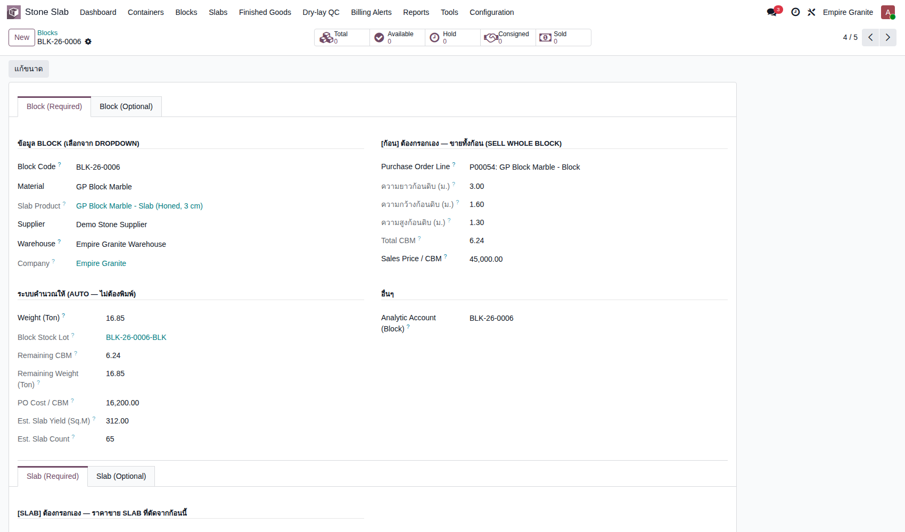 |
| TC-GP-BLK-09 | แก้ขนาด Block ที่วัดผิด (ผู้จัดการคลัง) พร้อมเหตุผล ใช้ได้เฉพาะ Inventory Manager และต้องใส่เหตุผลทุกครั้ง — ระบบปรับสต็อกส่วนต่างด้วยการปรับสต็อกมาตรฐานของ Odoo และเก็บประวัติให้ |
ทำ TC-GP-BLK-08 เสร็จแล้ว · Block นี้ยังไม่ถูกตัด |
|
สูงใหม่ = 1.25 ม. (เดิม 1.30) เหตุผล = วัดซ้ำหน้างาน ความสูงจริง 1.25 ม. (กรอกตอนรับของผิด) |
Total CBM เปลี่ยน 6.24 → 6.00 · แท็บประวัติมี 1 แถว: เวลา, ผู้แก้, ขนาดเดิม/ใหม่, CBM เดิม/ใหม่, ปรับสต็อก −0.24, พร้อมเหตุผล | Medium | 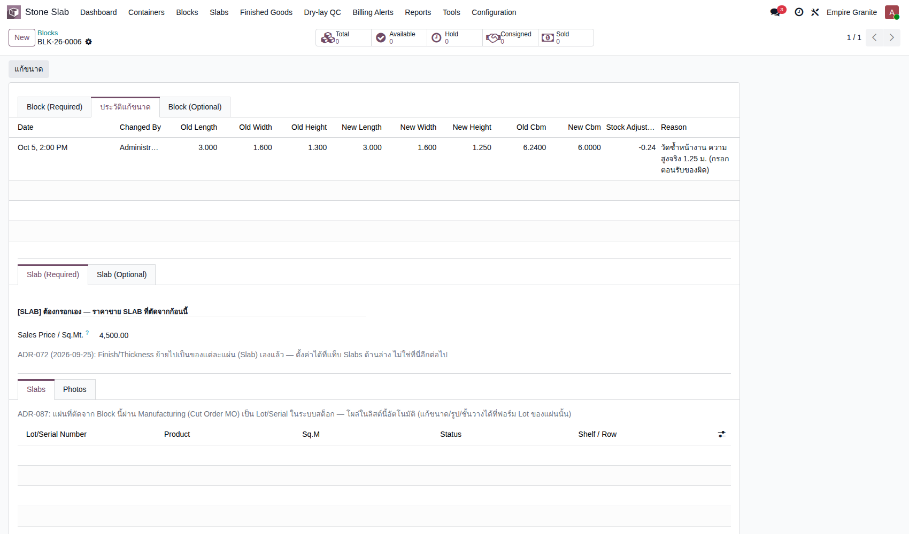 |
B5. ขาย Block ทั้งก้อน (Sell Whole Block)
ขาย → ส่งของ → ออกใบแจ้งหนี้ และตรวจต้นทุนขาย · 3 test cases
| TC ID | Scenario | Precondition | Steps | ข้อมูลตัวอย่าง | Expected Result | Priority | ภาพหน้าจอ |
|---|---|---|---|---|---|---|---|
| TC-GP-BLK-10 | สร้างใบสั่งขาย เลือก "Sell Whole Block" แล้ว Confirm | มี Block ที่ยังไม่ถูกตัด (เช่น BLK-26-0008) · มีลูกค้าในระบบ |
|
ลูกค้า = Demo Hotel Customer Block = BLK-26-0008 |
จำนวนและราคาขึ้นให้เองจากปริมาตรจริง: 3.53 m³ × 45,000 = 158,850.00 บาท (+ VAT 11,119.50 = 169,969.50) · SO เป็น Sales Order และมีสมาร์ทปุ่ม Delivery 1 ใบ (ตัวอย่างจริง S00173) | High | 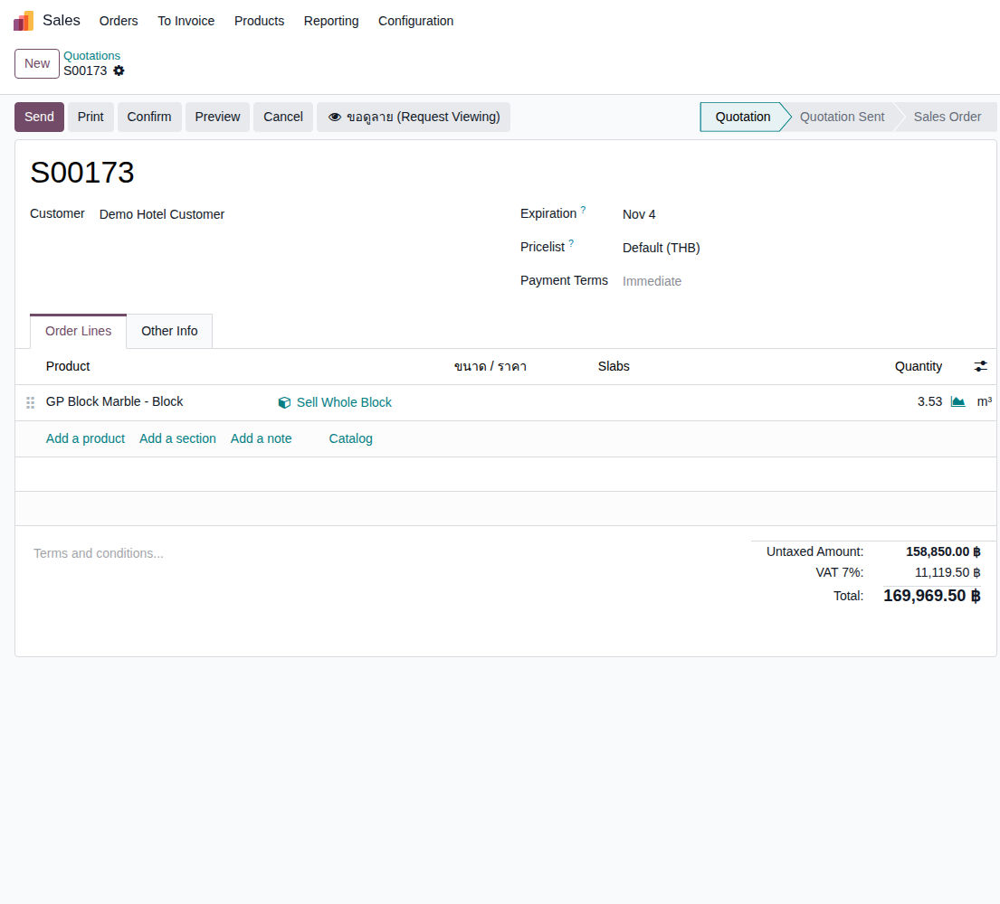 |
| TC-GP-BLK-11 | ส่งของ (Delivery) Block ให้ลูกค้า | ทำ TC-GP-BLK-10 เสร็จแล้ว |
|
- | ใบส่งของขึ้น Done ปริมาณ 3.53 m³ / 9.53 ตัน ตัดสต็อกออกจาก Stone Available (ตัวอย่างจริง EG01/OUT/00057) | High | 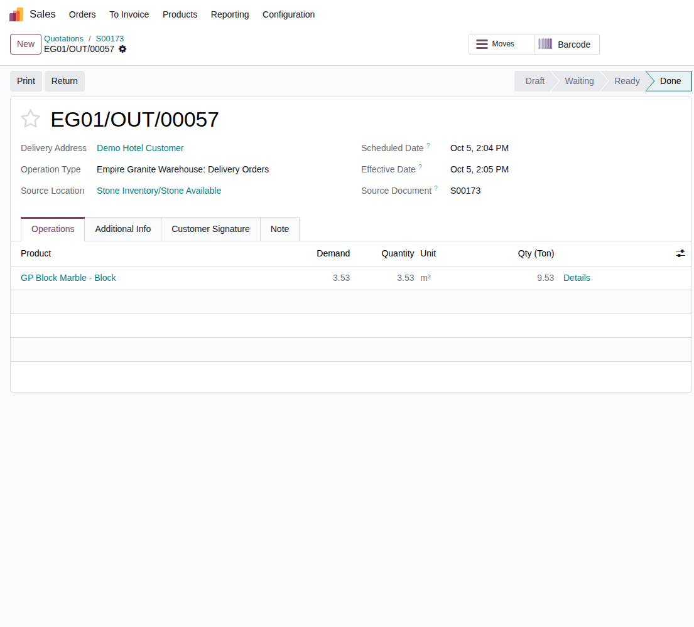 |
| TC-GP-BLK-12 | ออกใบแจ้งหนี้ และตรวจรายการบัญชี (รายได้ + ต้นทุนขาย) ข้อสังเกตสำหรับฝ่ายบัญชี: ในรอบทดสอบนี้ สต็อก Block ถูกตัดจากบัญชี 113120 "Inventory - Stone Slabs (Ready-Made)" ซึ่งชื่อเป็นของ Slab — ยอดตัวเลขถูกต้อง แต่ควรให้ฝ่ายบัญชีดูว่าต้องการแยกบัญชีสต็อก Block หรือไม่ (ยังไม่ได้ตัดสินใจ) |
ทำ TC-GP-BLK-11 เสร็จแล้ว |
|
- | ใบแจ้งหนี้ขึ้น Posted (INV/2026/00001) · รายการบัญชีสมดุลที่ 227,155.50: รายได้ 411100 = 158,850.00 · ต้นทุนขาย 511110 = 57,186.00 (=3.53 × 16,200 ตรงกับต้นทุน PO) · ตัดสต็อก 113120 = 57,186.00 · VAT 213200 = 11,119.50 · ลูกหนี้ 112100 = 169,969.50 | High | 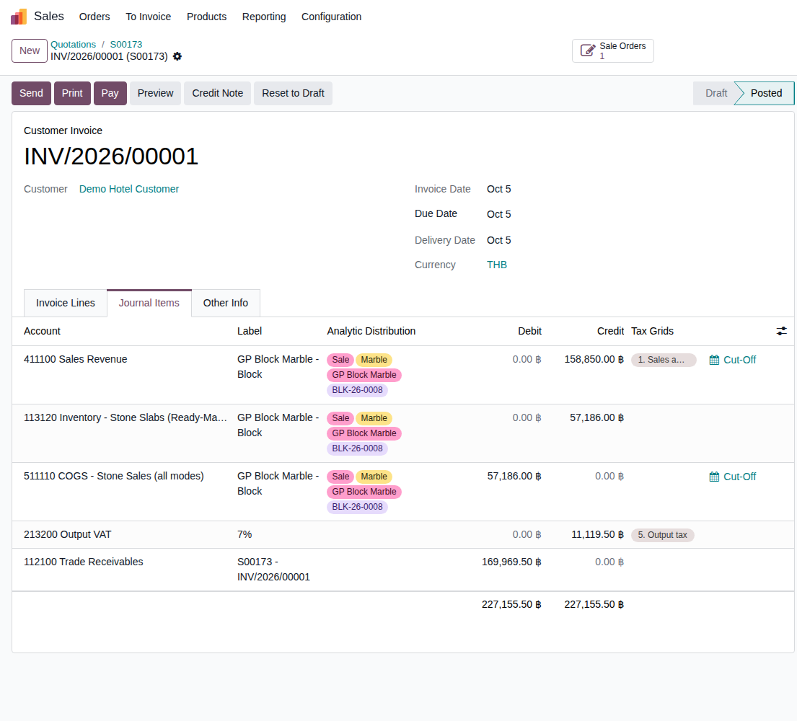 |